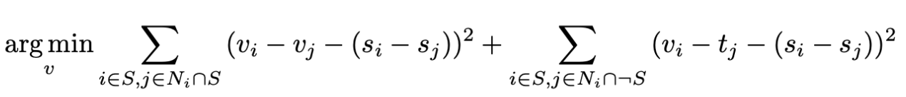
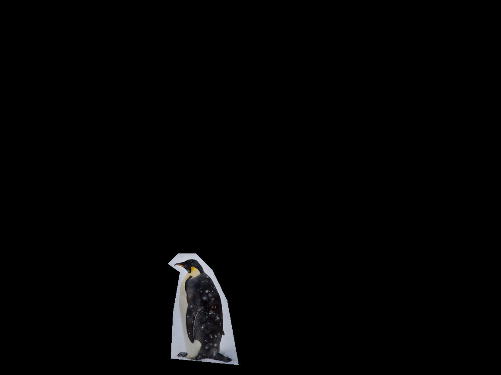
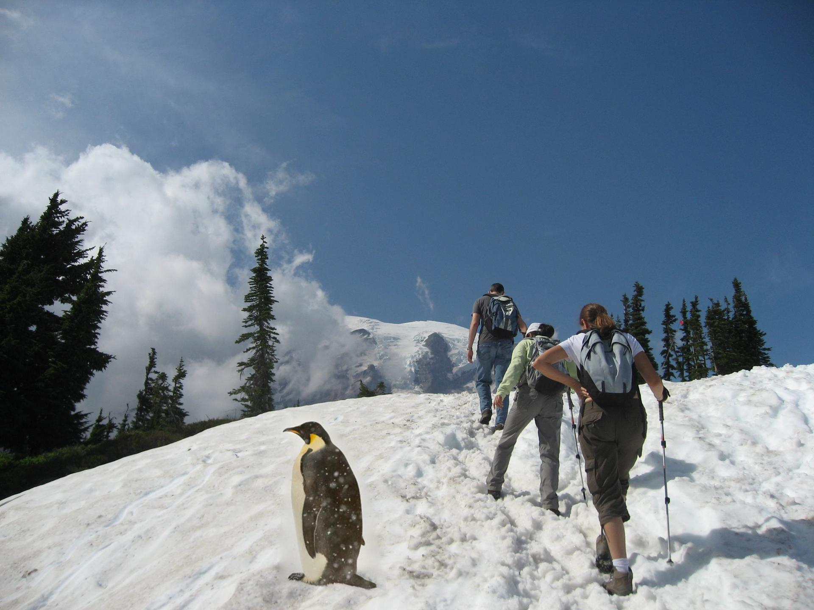
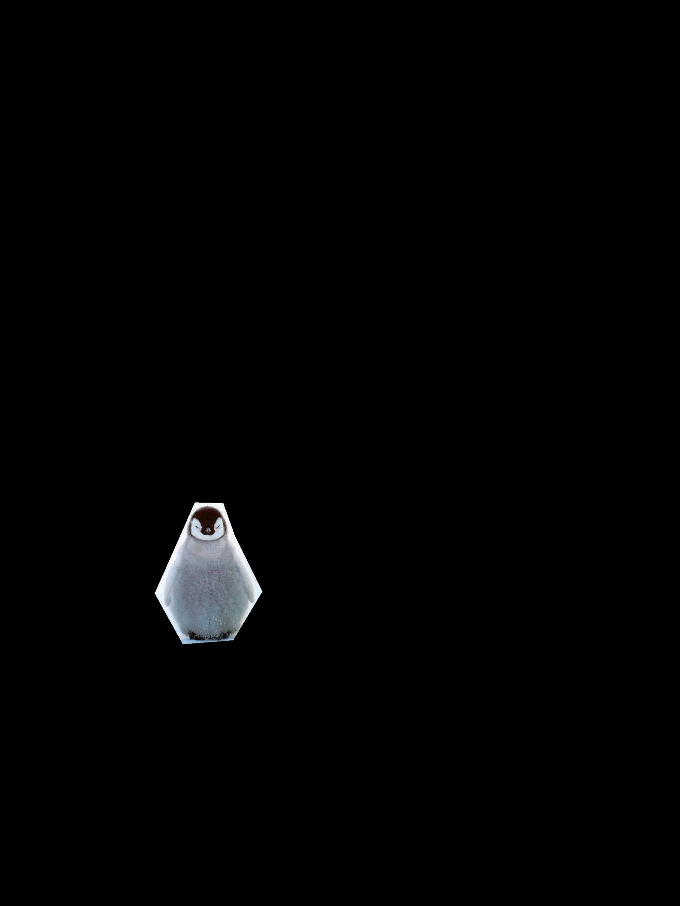
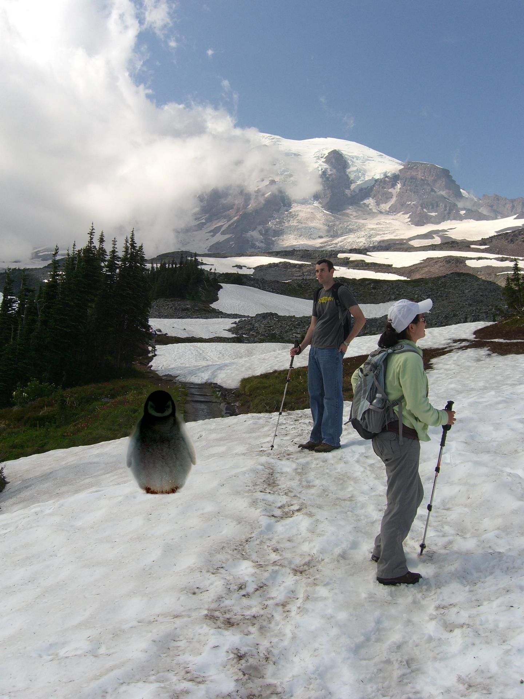
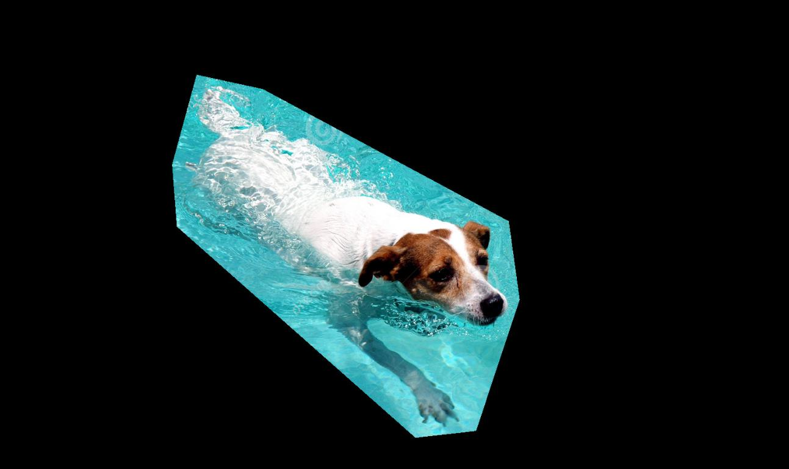
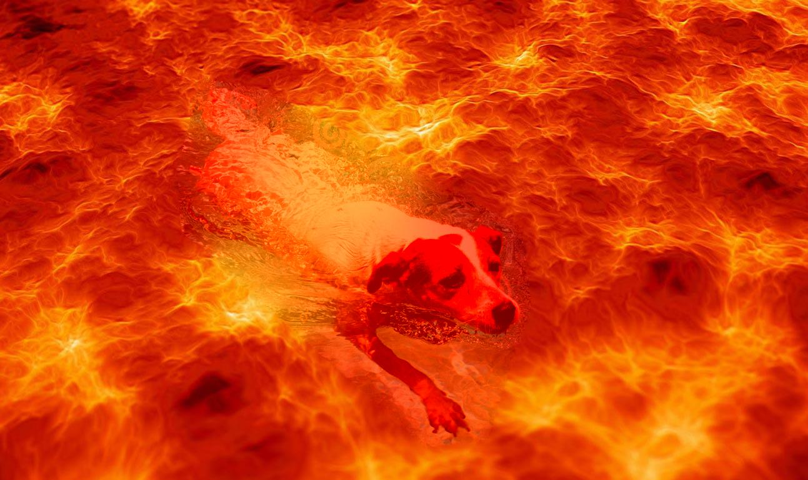

Say we want to blend some part of a source image s a.k.a. the source region S onto a target image t to form a new image v. Let's first talk about the part of preprocessing work we have to do before blending, which is to select the source region and align it with the target image. In my experiment, I set the source region to be an arbitrary polygon inside the source image, selecting vertices of the polygon in counterclockwise order and then generating an 0-1 mask of the source region. Then to align it with the target image, I first rescale it and then translate it to where in the target image it should be blended at. Now we have the aligned source image, the target image and the mask indicating the source region. We could start poisson blending!
Using the same idea as in part1, we first compute the x and y gradients from s inside the source region, then use all the gradients, plus pixel intensities of t on the border of S, to solve for the part of v inside the area of S. We can formulate our objective as follows, which could also be solved as a least squares problem. The rest of v outside the area of S is just the same as the target image t.

Time to show my results!
Example 1
I first tried to blend a penguin on top of the snow in a hiking image. Here I first visualized the source region mask, which is a polygon of 9 vertices. Then to align the source region with the target image, I scaled it by 2.45 and then translated it by (630,974).

(b) aligned source region
The blending result below is pretty good!

Example 2
This time I tried to blend another front-face penguin on top of the snow in another hiking image. Here I first visualized the source region mask, which is a polygon of 6 vertices. Then to align the source region with the target image, I scaled it by 1.02 and then translated it by (439,1539).

(b) aligned source region
This is a failure case (which I intened to do so). The penguin was blended across the mountain and the snow which is of completely different color. The background of the object in the source region and the surrounding area of the target region need to be of similar color, or at least the background should be roughly the same color, in order to make a successful result.

Example 3
Here I tried to blend a swimming dog into a magma pool! Here I first visualized the source region mask, which is a polygon of 8 vertices. Then to align the source region with the target image, I scaled it by 0.85 and then translated it by (148,81).

(b) aligned source region
The result is super cool! Seeing a dog swimming in a magma pool.
